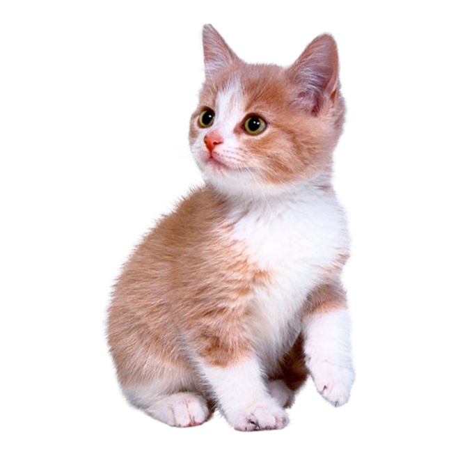

Quem somos?
Somos uma livraria e cafeteria única, um espaço acolhedor onde livros e café se encontram, enquanto promovemos o bem-estar dos nossos adoráveis gatos para adoção. Nosso ambiente foi criado para proporcionar uma experiência sensorial completa, com um cardápio saboroso e uma seleção de livros que encantam leitores de todas as idades. Além disso, temos a missão de ajudar a encontrar novos lares para os felinos, oferecendo a chance de adotar um amigo peludo enquanto desfruta de um bom livro e uma bebida quente.

O que buscamos?
Buscamos ser um ponto de encontro para pessoas que amam ler, relaxar e compartilhar momentos especiais. Queremos oferecer um ambiente tranquilo e agradável, onde nossos clientes possam explorar a literatura, saborear deliciosos cafés e, ao mesmo tempo, criar laços com os gatos disponíveis para adoção. Acreditamos que cada livro e cada café tem o poder de transformar momentos simples em memórias inesquecíveis, e que a adoção responsável pode mudar vidas, tanto humanas quanto felinas.
Nossos valores
- Aliquam egestas eros id nunc gravida, at euismod nunc fermentum.
- Nulla vel nisi sed enim lobortis vulputate eget eget tortor.
- Mauris tempor lectus sed elit aliquam pretium.
- Nam commodo felis non euismod molestie.
- Phasellus blandit elit at massa scelerisque, vitae lobortis ex iaculis.
- Maecenas auctor tellus vitae lectus condimentum tincidunt.